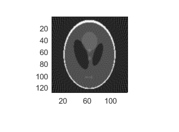
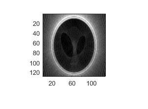
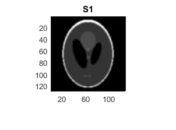
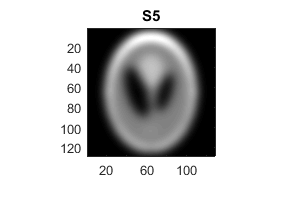
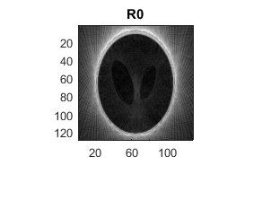
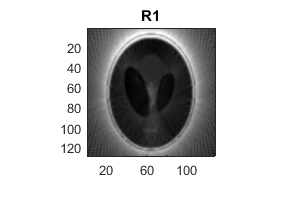
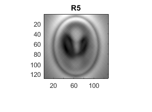
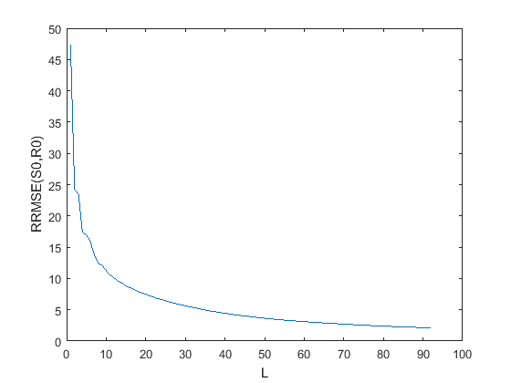
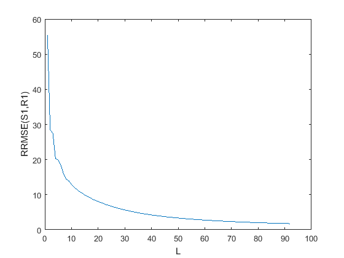
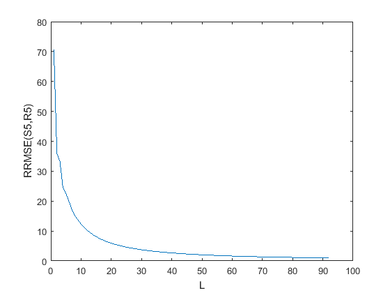

Contents
clc; close all; f = phantom(128); % figure() % imagesc(f)
Part a
theta = 0:3:177; rf = radon(f,theta); % Radon transform of f(x,y) % figure() % imagesc(rf) brf = iradon(rf,theta,'linear','None',1,size(f,1)); % Backprojection of the Radon transform of f(x,y) % figure() % imagesc(brf) N = size(rf,1); wmax = (N-1)/2; rf_ft = fftshift(fft(rf,N)); % figure() % imagesc(rf_ft) L = wmax; [ram_lak,shepp_logan,cosine] = myFilter(L); frf1 = zeros(size(rf_ft)); frf2 = zeros(size(rf_ft)); frf3 = zeros(size(rf_ft)); for i=1:size(rf_ft,2) frf1(:,i) = ram_lak'.*rf_ft(:,i); frf2(:,i) = shepp_logan'.*rf_ft(:,i); frf3(:,i) = cosine'.*rf_ft(:,i); end fbp1 = iradon(real(ifft(ifftshift(frf1),N)),theta,'linear','None',1,size(f,1)); fbp2 = iradon(real(ifft(ifftshift(frf2),N)),theta,'linear','None',1,size(f,1)); fbp3 = iradon(real(ifft(ifftshift(frf3),N)),theta,'linear','None',1,size(f,1)); figure() imagesc(fbp1) colormap('gray') truesize figure() imagesc(fbp2) colormap('gray') truesize figure() imagesc(fbp3) colormap('gray') truesize L = wmax/2; ram_lak=zeros(1,N); shepp_logan=zeros(1,N); cosine=zeros(1,N); [ram_lak1,shepp_logan1,cosine1] = myFilter(L); ram_lak((N-1)/2 - L + (1:2*L+1)) = ram_lak1; shepp_logan((N-1)/2 - L + (1:2*L+1)) = shepp_logan1; cosine((N-1)/2 - L + (1:2*L+1)) = cosine1; frf1 = zeros(size(rf_ft)); frf2 = zeros(size(rf_ft)); frf3 = zeros(size(rf_ft)); for i=1:size(rf_ft,2) frf1(:,i) = ram_lak'.*rf_ft(:,i); frf2(:,i) = shepp_logan'.*rf_ft(:,i); frf3(:,i) = cosine'.*rf_ft(:,i); end fbp1 = iradon(abs(ifft(ifftshift(frf1),N)),theta,'linear','None',1,size(f,1)); fbp2 = iradon(abs(ifft(ifftshift(frf2),N)),theta,'linear','None',1,size(f,1)); fbp3 = iradon(abs(ifft(ifftshift(frf3),N)),theta,'linear','None',1,size(f,1)); figure() imagesc(fbp1) colormap('gray') truesize figure() imagesc(fbp2) colormap('gray') truesize figure() imagesc(fbp3) colormap('gray') truesize 
Part a: Observations
There is no noticeable difference between the 3 filtered backprojections. Theoretically, cosine filter should give low noise in the filtered backprojection as it attenuates high frequencies. However, due to the same reason, edges will be blurred When L is decreased to wmax/2, we see a lot of blurring particularly at the outer boundary of the phantom because the higher frequencies are attenuated.
Part b
mask1 = fspecial ('gaussian', 11, 1); % Gaussian mask mask2 = fspecial ('gaussian', 51, 5); % Gaussian mask fblurred1 = conv2 (f, mask1, 'same'); % Generate blurred version of the Shepp-Logan image fblurred2 = conv2 (f, mask2, 'same'); % Generate blurred version of the Shepp-Logan image figure() imagesc(f) colormap('gray') truesize title('S0') figure() imagesc(fblurred1) colormap('gray') truesize title('S1') figure() imagesc(fblurred2) colormap('gray') truesize title('S5') rf = radon(f,theta); rf1 = radon(fblurred1,theta); rf2 = radon(fblurred2,theta); rf_ft = fftshift(fft(rf,N)); rf_ft1 = fftshift(fft(rf1,N)); rf_ft2 = fftshift(fft(rf2,N)); L = wmax; [ram_lak,~,~] = myFilter(L); frf = zeros(size(rf_ft)); frf1 = zeros(size(rf_ft1)); frf2 = zeros(size(rf_ft2)); for i=1:size(rf_ft,2) frf(:,i) = ram_lak'.*rf_ft(:,i); frf1(:,i) = ram_lak'.*rf_ft1(:,i); frf2(:,i) = ram_lak'.*rf_ft2(:,i); end fbp = iradon(abs(ifft(ifftshift(frf),N)),theta,'linear','None',1,size(f,1)); fbp1 = iradon(abs(ifft(ifftshift(frf1),N)),theta,'linear','None',1,size(f,1)); fbp2 = iradon(abs(ifft(ifftshift(frf2),N)),theta,'linear','None',1,size(f,1)); figure() imagesc(fbp) colormap('gray') truesize title('R0') figure() imagesc(fbp1) colormap('gray') truesize title('R1') figure() imagesc(fbp2) colormap('gray') truesize title('R5') % f1=imresize(f,size(fbp)); % fblurred11=imresize(fblurred1,size(fbp1)); % fblurred21=imresize(fblurred2,size(fbp2)); rrmse = sqrt(sumsqr(f-fbp))/sqrt(sumsqr(f)); rrmse1 = sqrt(sumsqr(fblurred1-fbp1))/sqrt(sumsqr(fblurred1)); rrmse2 = sqrt(sumsqr(fblurred2-fbp2))/sqrt(sumsqr(fblurred2)); sprintf('RRMSE(S0,R0)=%f',rrmse) sprintf('RRMSE(S1,R1)=%f',rrmse1) sprintf('RRMSE(S5,R5)=%f',rrmse2)
ans = RRMSE(S0,R0)=2.107197 ans = RRMSE(S1,R1)=1.737959 ans = RRMSE(S5,R5)=0.995610    
Part b: Observations
RRMSE is highest for the unblurred Shepp-Logan and lowest for the Shepp-Logan which is blurred the most. This is because blurring removes the high frequency content in the original image. Due to this, lesser information is lost when we filter the backprojection and hence, the RRMSE decreases.
Part c
L = wmax; ram_lak=zeros(1,N); rrmse = zeros(1,wmax); rrmse1 = zeros(1,wmax); rrmse2 = zeros(1,wmax); for L=1:wmax [ram_lak1,~,~] = myFilter(L); ram_lak((N-1)/2 - L + (1:2*L+1)) = ram_lak1; frf = zeros(size(rf_ft)); frf1 = zeros(size(rf_ft1)); frf2 = zeros(size(rf_ft2)); for i=1:size(rf_ft,2) frf(:,i) = ram_lak'.*rf_ft(:,i); frf1(:,i) = ram_lak'.*rf_ft1(:,i); frf2(:,i) = ram_lak'.*rf_ft2(:,i); end fbp = iradon(abs(ifft(ifftshift(frf),N)),theta,'linear','None',1,size(f,1)); fbp1 = iradon(abs(ifft(ifftshift(frf1),N)),theta,'linear','None',1,size(f,1)); fbp2 = iradon(abs(ifft(ifftshift(frf2),N)),theta,'linear','None',1,size(f,1)); rrmse(L) = sqrt(sumsqr(f-fbp))/sqrt(sumsqr(f)); rrmse1(L) = sqrt(sumsqr(fblurred1-fbp1))/sqrt(sumsqr(fblurred1)); rrmse2(L) = sqrt(sumsqr(fblurred2-fbp2))/sqrt(sumsqr(fblurred2)); end figure() plot(rrmse) xlabel('L') ylabel('RRMSE(S0,R0)') figure() plot(rrmse1) xlabel('L') ylabel('RRMSE(S1,R1)') figure() plot(rrmse2) xlabel('L') ylabel('RRMSE(S5,R5)')  
Part c: Observations
As L increases, RRMSE decreases because lesser information is lost as we are accouning for more and more high frequency content.